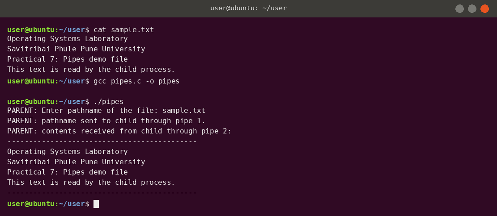

Practical 7
Full-Duplex Communication using Pipes
Theory
This practical uses unnamed pipes so that a parent and child process can communicate in both directions. The parent sends a file name; the child opens the file and sends its contents back.
Key concepts
- Pipe – a kernel buffer that lets one process write bytes and another read them in the same order (FIFO).
pipe(fd)– creates a pipe and fills a 2-element array:fd[0]is the read end,fd[1]is the write end.- Pipes and
fork()– the child inherits copies of the parent's file descriptors, so both processes can use the same pipe. This is why unnamed pipes only work between related processes. - Half duplex vs full duplex – one pipe is one-way only. For two-way communication this program creates two pipes:
p1(parent → child) andp2(child → parent). - Closing unused ends – each process closes the pipe ends it does not use. A
read()returns 0 (end of file) only when all write ends are closed, so forgetting to close them can make a reader wait forever. - File system calls –
open(),read(),write()andclose()work with file descriptors, the same way for files and pipes.
Flow of the program
- Parent reads a file path from the user and writes it into pipe 1.
- Child reads the path from pipe 1 and opens the file with
open(). - If the file cannot be opened, the child sends an error message; otherwise it reads the file and writes its contents into pipe 2.
- Parent reads pipe 2 and prints the contents on the screen, then calls
wait()for the child.
Code
/* Practical 7 : Pipes - full duplex communication between parent and child */
#include <stdio.h>
#include <stdlib.h>
#include <string.h>
#include <fcntl.h>
#include <unistd.h>
#include <sys/types.h>
#include <sys/wait.h>
int main(void) {
int p1[2], p2[2]; /* p1: parent -> child, p2: child -> parent */
char path[256], buf[1024];
ssize_t n;
if (pipe(p1) < 0 || pipe(p2) < 0) { perror("pipe"); exit(1); }
pid_t pid = fork();
if (pid < 0) { perror("fork"); exit(1); }
if (pid > 0) { /* PARENT */
close(p1[0]); close(p2[1]);
printf("PARENT: Enter pathname of the file: ");
fflush(stdout);
scanf("%255s", path);
write(p1[1], path, strlen(path) + 1);
close(p1[1]);
printf("PARENT: pathname sent to child through pipe 1.\n");
printf("PARENT: contents received from child through pipe 2:\n");
printf("--------------------------------------------\n");
fflush(stdout);
while ((n = read(p2[0], buf, sizeof buf)) > 0)
write(STDOUT_FILENO, buf, n);
printf("--------------------------------------------\n");
close(p2[0]);
wait(NULL);
} else { /* CHILD */
close(p1[1]); close(p2[0]);
read(p1[0], path, sizeof path);
close(p1[0]);
int fd = open(path, O_RDONLY);
if (fd < 0) {
const char *msg = "CHILD: Error - cannot open the file\n";
write(p2[1], msg, strlen(msg));
} else {
while ((n = read(fd, buf, sizeof buf)) > 0)
write(p2[1], buf, n);
close(fd);
}
close(p2[1]);
exit(0);
}
return 0;
}
Output

Tap or click the screenshot to open it full size.